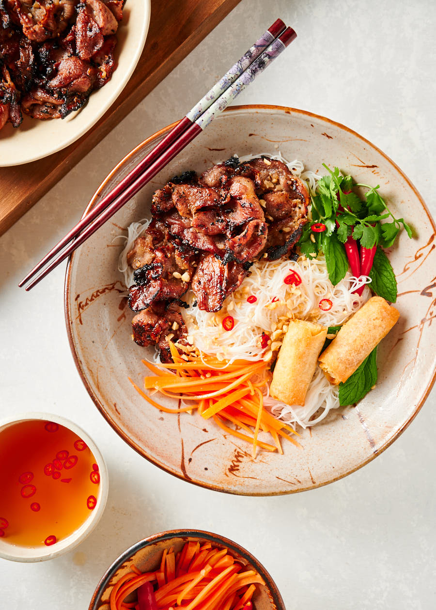

Bun thit nuong (Asian pork noodles)

Discription
Bun thit nuong is a refreshing Vietnamese grilled pork and rice noodle dish that contrasts warm pork with cool rice vermicelli. Perfect hot weather food.
Ingredients
The pork and marinade (thit nuong)
Noodle bowls
- 8oz rice vermicelli
- nuoc cham (Fish scaue with diced chili and garlic inside)
- carrots
- mint, coriander,thai basil,coriander,lettuce
- chopped peanuts
- spring roles (make them or get them from a restaurant)
Instructions
Make the marinade
- cut the lemongrass. Remove the tough outer pieces. You want the tender inside bits. If it's hard to push a sharp knife through it, it is not tender
- Combine all the marinade ingredients. That is everything except the pork in the pork and marinade section of the ingredients
Use a bowl that's big enough to hold all the pork. And give you enough room to mix it all up
- Stir to combine the marinade ingredients. Add the pork. Use your hands to mix it all up. You want the pork coated.
- Cover with plastic wrap, refrigerate and marinate 1 to 12 hours.
Do your prep
- Soften your rice vermicelli. Bring a kettle to boil. Pick a large bowl. Pour boiling water over the noodles. Let it sit for around 5 minutes
- When the noodles are tender drain. Rinse under cold water until cool. Set aside.
Prep your noodle bowl
- You want this done before you start grilling. Or somebody else can do it while you grill.
- Place 1/4 of the noodles in 4 bowls. Add your choice of garnishes. Cut up some lime. Put out the nuoc cham. All that should be left to add is the pork.
- Enjoy your meal